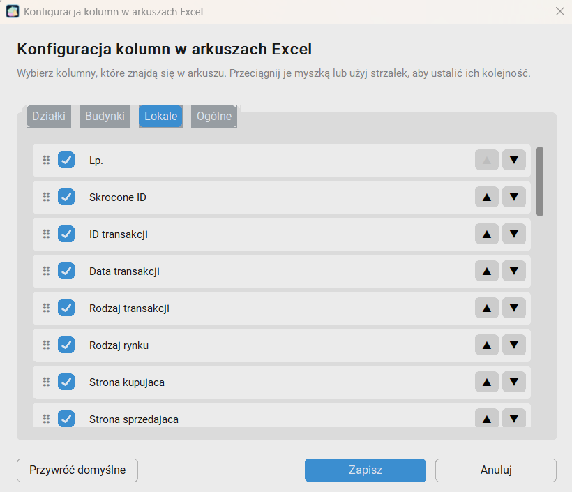
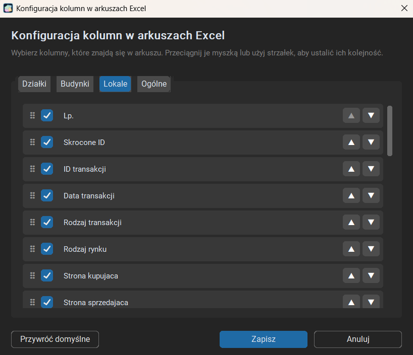
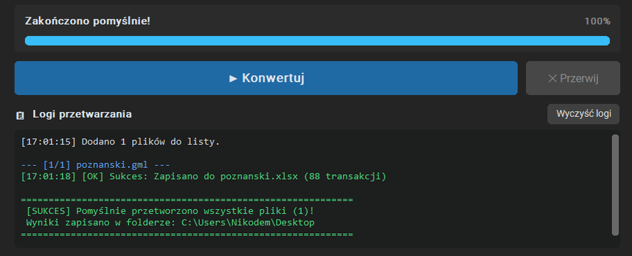

Instrukcja obsługi — GML Reader
Instrukcja instalacji, konfiguracji i codziennego użytkowania programu.
1. Pobieranie i instalacja
Pobierz instalator ze strony Pobieranie (plik
GML_Reader_Setup_vX.X.exe).
Uruchom instalator. Jeśli Windows Defender SmartScreen wyświetli ostrzeżenie („System Windows ochronił ten komputer”), kliknij odnośnik „Więcej informacji”, a następnie przycisk „Uruchom mimo to”.
Postępuj zgodnie z poleceniami w instalatorze:
- Wskaż, czy program ma być zainstalowany tylko dla obecnego użytkownika/konta Windows („Install for me only”) czy dla wszystkich użytkowników/kont Windows („Install for all users”);
- Wybierz język instalatora Polski lub Angielski (English);
- Przeczytaj i zaakceptuj umowę licencyjną;
- Wybierz lokalizację docelową programu;
- Wskaż, czy instalator ma utworzyć skróty w Menu Start lub na Pulpicie zaznaczając odpowiednie pola wyboru;
- Kliknij przycisk „Instaluj”.
2. Aktywacja licencji
Program po zainstalowaniu działa w pełni funkcjonalnym trybie demonstracyjnym bez konieczności wpisywania klucza. Jedynym ograniczeniem jest limit do 7 transakcji zapisywanych w wygenerowanym arkuszu Excel.
Jak aktywować pełną wersję:
W górnym menu programu kliknij przycisk „Licencja”.
Wklej otrzymany klucz licencyjny w polu „Klucz licencji” a następnie kliknij „Aktywuj licencję”. (Uwaga! Do aktywacji licencji wymagane jest stabilne połączenie z Internetem)
Identyfikator komputera (HWID):
Jest to unikalny skrót generowany na podstawie podzespołów Twojego komputera. Służy wyłącznie do powiązania zakupionej licencji ze stacją roboczą. Nie zawiera żadnych danych osobowych ani informacji o plikach.
Przycisk „Synchronizuj”:
Służy do odświeżenia stanu licencji z serwerem. Użyj go, jeżeli zmieniałeś parametry lub żądałeś dezaktywacji licencji.
3. Szybki start
- Kliknij przycisk „Dodaj plik” lub po prostu przeciągnij plik (np.
.gmllub.gpkg) do okna programu. - Kliknij przycisk „Konwertuj”.
- Gotowy plik Excel (
.xlsx) zapisze się domyślnie w tym samym folderze, w którym znajduje się konwertowany plik. Możesz też kliknąć przycisk „Pokaż Excel” na liście dodanych plików, aby otworzyć folder w którym zapisał się plik .xlsx.
4. Opis wybranych kolumn w generowanych arkuszach
Dla transakcji wieloprzedmiotowych (zawierających kilka działek, budynków lub lokali) dane zapisywane są w komórkach po średniku z zachowaniem odpowiadającej kolejności np.
| Lp. | Numer dzialki | Sposob uzytkowania |
|---|---|---|
| 1 | 40/41; 40/71 | Grunty zabudowane i zurbanizowane; Grunty rolne |
| 2 | 30/8; 31/4; 30/5; 31/3; 30/6; 30/2 | Grunty rolne; Grunty rolne; Grunty rolne; Grunty rolne; Grunty rolne; Grunty lesne |
Powierzchnia [m2], Pow. dzialki [m2], Pow. zsumowana lok. [m2]: w przypadku transakcji wieloprzedmiotowych, w tych
kolumnach sumowana jest powierzchnia wszystkich działek lub lokali, do których prawa zostały nabyte w
całości (1/1) (powód: uniknięcie zawyżeń spowodowanych dodawaniem powierzchni hali garażowej do której
kupujący ma prawo ułamkowe).
Te kolumny nadają się do sortowania w Excelu (np. od największej powierzchni).
Powierzchnie czastkowe [m2], Pow. uzytkowa budynku [m2], Pow. uzytkowa lokalu [m2]: w przypadku transakcji wieloprzedmiotowych
powierzchnie poszczególnych (kolejnych) działek, budynków lub lokali są wypisywane po średniku.
Z uwagi na strukturę te kolumny NIE nadają się do sortowania w Excelu.
Cena [PLN]: cena całej transakcji, nawet w przypadku transakcji
wieloprzedmiotowych.
Ta kolumna nadaje się do sortowania w Excelu.
Ceny czastkowe [PLN]: w przypadku transakcji wieloprzedmiotowych program
pobiera ceny poszczególnych działek, budynków lub lokali i zapisuje je w odpowiedniej kolejności po
średniku.
Ta kolumna NIE nadaje się do sortowania w Excelu. (Uwaga! Czasami w przypadku braku cen cząstkowych lub błędnie wpisanych danych w plikach .gml, w tej kolumnie będą pojawiać się kilkukrotnie powtórzone pełne ceny transakcji – nie jest to błąd programu, lecz samego pliku z transakcjami.)
Cena za m2 [PLN]: powstaje poprzez podzielenie ceny transakcji przez
powierzchnię w metrach kwadratowych. W przypadku transakcji wieloprzedmiotowych dzielona jest pełna cena
przez zsumowaną powierzchnię wszystkich działek/lokali z transakcji, do których zostały nabyte pełne prawa
(1/1).
Puste komórki w niektórych kolumnach: puste komórki powstają najczęściej z powodu braku konkretnych danych w pliku z transakcjami (np. w pliku .gml), a nie z powodu błędnego działania programu. Dotyczy to zwykle kolumn typu „Info dodatkowe” lub „VAT”, które często nie są uzupełniane w plikach .gml.
5. Opis funkcjonalności
5.1 Górne menu
„Kolumny Excela”: Otwiera okno konfiguratora arkusza wynikowego:


- Podział na arkusze: arkusze działek, budynków i lokali są niezależne i można je konfigurować osobno.
- Włączanie i wyłączanie kolumn: Odznaczenie pola wyboru przy nazwie kolumny sprawi, że ta kolumna nie pojawi się w wygenerowanym arkuszu Excel.
- Kolejność kolumn: Kolejność kolumn w arkuszu można ustalić chwytając i przesuwając kolumny myszką, lub klikając strzałki „góra” i „dół”.
-
Zakładka „Ogólne”:
Ustawianie długości skróconego Id: umożliwia ustawienie z ilu znaków składa się Id transakcji w kolumnie skrócone id. Kolumna przydaje się, przy chęci sprawdzenia danej transakcji w pliku
.pdfgenerowanym równolegle z plikiem.gmlprzez portal iRzeczoznawca. W plikach pdf często nie jest podawane pełne id transakcji co uniemożliwia wyszukiwanie transakcji za pomocą Ctrl + f i wklejenia skopiowanego pełnego Id transakcji z komórki w excelu (skrócone id rozwiązuje ten problem, bo nie trzeba ręcznie skracać id podczas wyszukiwania).(dostępne od wersji 2.1)
Filtrowanie zakresu dat transakcji: opcja pozwala ograniczyć konwertowane transakcje wyłącznie do określonego przedziału czasowego. Aby włączyć filtr, zaznacz pole „Wybierz zakres dat transakcji” i wybierz datę początkową („Od:”) oraz końcową („Do:”) (w przypadku ręcznego wpisywania format
RRRR-MM-DDnp.2024-01-01). Pole „Do:” domyślnie przyjmuje zawsze bieżącą datę systemową. Jeżeli któreś z pól pozostanie puste, program przefiltruje dane jednostronnie (np. tylko transakcje od podanej daty wzwyż). Gdy opcja jest odznaczona, program pobiera wszystkie transakcje bez weryfikacji dat. Zawężenie dat przy dużych plikach powiatowych pozwala skrócić czas konwertowania (przerabianych jest mniej transakcji).Wybór arkuszy nieruchomości (Działki / Budynki / Lokale): w sekcji „Arkusze nieruchomości” możesz zdecydować, które kategorie nieruchomości mają zostać wyeksportowane do wynikowego skoroszytu Excel. Domyślnie zaznaczone są wszystkie trzy typy (Działki, Budynki, Lokale). Odznaczenie dowolnego typu sprawia, że program całkowicie pominie dany arkusz w wynikowym pliku
.xlsx.
„Kontakt”: Wyświetla okno z adresem email autora programu.
„Licencja”: Okno zarządzania licencją, podgląd HWID, aktywacja i synchronizacja.
„Język (PL / EN)”: Przełącznik języka interfejsu aplikacji.
„Motyw” (ikonka słońca lub księżyca): Przełącznik motywu ciemnego i jasnego.
5.2 Pliki wejściowe
Program umożliwia przetwarzanie wsadowe wielu plików w jednej kolejce.
- Obsługiwane formaty:
.gml,.gpkg,.shp,.geojson,.kml. - Przycisk „Dodaj plik” pozwala wybrać konkretne pliki z dysku, które mają zostać dodane do listy.
- Przycisk „Wybierz folder” pozwala wybrać konkretny folder oraz dodaje do listy wszystkie obsługiwane przez program pliki znajdujące się w tym folderze.
- Przeciągnij i upuść (Drag & Drop): Pliki można przeciągać bezpośrednio z Eksploratora Windows na obszar listy.
- Przycisk „Wyczyść listę” usuwa wszystkie pozycje z listy.
- Działanie listy: Kliknięcie „Konwertuj” przetwarza wszystkie pliki znajdujące się na liście. Jeśli nie chcesz przetwarzać danego pliku ponownie, usuń go krzyżykiem „[x]” z prawej strony wiersza. Po zakończeniu konwersji przy danym pliku pojawia się przycisk „Pokaż Excel” otwierający folder, w którym znajduje się wygenerowany skoroszyt.
5.3 Zapis plików Excel
Domyślnie zaznaczona jest opcja zapisu w folderze pliku źródłowego (plik Excel powstaje w tym samym folderze co plik wejściowy). Można też wpisać ręcznie ścieżkę do innego folderu lub wskazać go przyciskiem „Przeglądaj...”.
5.4 Pasek statusu, sterowanie i logi

- Pasek statusu: Na bieżąco pokazuje postęp konwersji oraz wykonywane w danym momencie operacje.
- Przycisk „Konwertuj”: uruchamia przetwarzanie plików z listy.
- Przycisk „Przerwij”: Przerywa proces konwersji plików. (Uwaga! Czasami przerwanie konwersji trwa do kilku/kilkunastu sekund. Jest to normalne zachowanie programu zależne od wielkości pliku oraz momentu w którym konwersja zostanie przerwana)
- Logi: Dolne pole tekstowe rejestruje szczegóły techniczne procesu i ewentualne komunikaty o błędach. Przycisk „Wyczyść logi” czyści zawartość pola.
6. Rozwiązywanie problemów
- Aktywacja a brak internetu: Połączenie z internetem jest potrzebne tylko podczas aktywacji klucza lub kliknięcia „Synchronizuj”. Do samej konwersji plików internet nie jest potrzebny, program działa w pełni offline.
- Plik Excel jest pusty: Sprawdź, czy plik GML nie jest uszkodzony oraz czy faktycznie zawiera obiekty rejestru transakcji RCiWN.
- Program Excel wyrzuca błąd podczas próby otwarcia pliku: Problem pojawia się w przypadku bardzo dużych plików Excel utworzonych z bardzo dużych zbiorów danych (np. transakcji z kilku lat). Należy próbować otwierać plik Excel „do skutku” lub dać programowi Microsoft Excel trochę czasu na przetworzenie dużego pliku. W każdym z dotychczasowych przypadków błędów Excela, kilkukrotna próba otwarcia rozwiązała problem. Błąd jest związany z wielkością powstałego pliku i nie jest wynikiem błędnego działania programu.
- Plik nie daje się przeciągnąć do listy konwersji (Drag & Drop nie działa): Upewnij się, że plik został uprzednio wypakowany z archiwum ZIP lub RAR. Windows blokuje bezpośrednie przeciąganie z wirtualnego podglądu archiwum. Sprawdź też, czy plik ma obsługiwane przez program rozszerzenie.
- Błąd „permission denied”: Sprawdź czy nie masz otwartego arkusza Excel o docelowej nazwie (nazwie pliku wejściowego do konwersji) w docelowym folderze zapisu pliku .xlsx. Jeżeli tak to zamknij ten arkusz i spróbuj ponownie.
- Nieobsługiwany format lub błąd konwersji: Schematy GML mogą różnić się w zależności od powiatu i oprogramowania ośrodka geodezyjnego. Jeśli dany plik zwraca błąd, przejdź do zakładki Kontakt i prześlij do mnie plik i/lub opis problemu. Postaram się jak najszybciej naprawić program.
7. Normalne zachowania programu
- Uruchomienie programu trwa kilka/kilkanaście sekund: Podczas startu aplikacja inicjalizuje silnik bibliotek przestrzennych (GDAL/OGR).
- Pliki inne niż .gml przetwarzają się dłużej: Formaty takie jak .shp czy .gpkg wymagają konwersji pośredniej do formatu roboczego, zanim zostaną wyeksportowane do Excela.
- Przerwanie konwersji trwa kilka sekund: Program czeka na bezpieczne domknięcie aktualnie przetwarzanego pliku, aby nie pozostawić uszkodzonego arkusza Excel.
- Dłuższe otwieranie się okna „Kolumny Excela”.
- Komunikat Windows SmartScreen o nieznanym programie: Jest to standardowe zachowanie dla nowego oprogramowania od niezależnych autorów (którzy nie posiadają kosztownego, korporacyjnego certyfikatu podpisu kodu). Program jest czysty i nie stanowi żadnego zagrożenia.
8. Kontakt
W razie pytań, problemów z plikiem, propozycji nowych funkcji lub chęci zakupu licencji zapraszam do kontaktu: